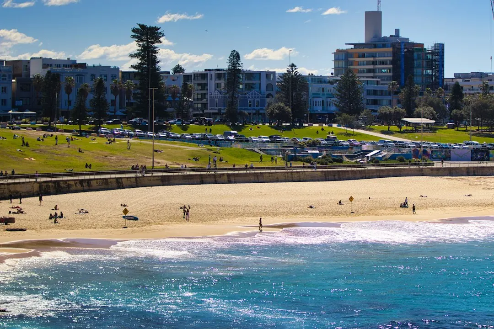

A retaining wall in Sydney should be assessed by height, length, ground conditions, drainage, surcharge and location on the block. Walls 600mm or less may qualify as exempt development only when every other Codes SEPP condition is met. Taller walls, walls carrying a surcharge, or walls outside the exempt standards may require engineering and approval. Material choices include concrete sleepers, timber, besser block, sandstone, boulder and gabion systems.
For homeowners comparing retaining wall contractors sydney options, the useful starting point is not a material catalogue but a clear account of the site, the retained height, drainage path and approval position.
Retaining Wall Contractors Sydney Explained
Retaining Walls Sydney describes the first decision as an assessment of what sits beneath the proposed wall. A sloping block, an ageing sleeper wall, a driveway edge and a garden terrace can each impose different demands. The enquiry should record approximate height, length, whether the wall is on a boundary, and the part of Sydney where the work is located.
Ground conditions also influence the construction conversation. The published guidance distinguishes sandstone ridges in the north shore and Northern Beaches from shale-clay ground through the inner west and western suburbs, and sandy bayside locations around Botany Bay. Those conditions can affect excavation, founding, drainage and the choice between a sleeper, block, stone or gabion system.
- Describe what the wall must retain, including soil, a driveway edge or a change between levels.
- Note existing cracking, bulging, movement or an old timber structure that may need replacement.
- Ask how water will move behind the wall and where the drainage will connect.
Match the wall system to the site
Concrete sleeper walls use steel-reinforced sleepers between galvanised posts and are presented as a practical option for sloping and split-level blocks. Timber sleepers suit gardens, terraces and low boundary retaining where the appearance and scale fit the site. Besser block walls are core-filled and steel-reinforced, with rendered finishes possible where a more built form is wanted.
Sandstone and boulder walls are described as battered back systems suited to Sydney sandstone country, while gabions use rock-filled wire baskets and provide a free-draining form for sloping or erosion-prone sites. The right comparison is therefore more than appearance. Ask for the proposed wall section, footing or post arrangement, drainage detail, finish, access assumptions and any removal of the existing structure.
For another view of material selection and project terminology, see this guide to retaining walls in Sydney.
Drainage belongs in the quote
Water management is a central part of the published construction guidance. It refers to ag-drain, gravel and geofabric behind the wall, with a connection to the site's stormwater system. The drainage arrangement should be written into the scope rather than left as an assumption, particularly where the block has shale-clay ground, a slope or signs of previous movement.
A useful quote should identify the drainage materials, outlet route, connection point and access needed to install them. It should also explain whether excavation, spoil removal, demolition of an old wall, rock work or difficult access is included. If a proposal only describes the visible face of the wall, ask what sits behind it and how water will be managed.
- Request a simple cross-section or written description of the wall and drainage layers.
- Confirm who is responsible for stormwater connection and site reinstatement.
- Ask whether the design changes if rock, clay or sandy founding conditions are encountered.
Check the approval pathway early
The guidance states that a wall may be exempt development under the Codes SEPP when it is 600mm or less and meets every other exempt-development standard. Those conditions include boundary setback, separation from other walls, drainage connection, distance from waterbodies and heritage constraints. Height alone does not establish that approval is unnecessary.
A wall above the 600mm exempt threshold, or one carrying a surcharge, is described as requiring design to AS 4678 by a structural or geotechnical engineer. Depending on the circumstances, approval may proceed as complying development or through a council development application. Before work starts, ask which pathway applies, what documents are required and who will coordinate the engineering or application material.
Who this guide applies to
This guide is for Sydney homeowners, renovators, property owners and tradespeople preparing a retaining-wall enquiry. It is especially relevant to owners dealing with sloping or split-level blocks, an ageing timber sleeper wall, a driveway needing structural support, a boundary terrace or a site where drainage and approval questions are unclear.
It is not a substitute for a site inspection, structural design or council advice. The useful next step is to gather photographs, approximate dimensions, access notes, the location of nearby structures and any history of movement or water. A specialist can then assess whether the proposal is a repair, replacement or new retaining-wall construction project, and whether engineering or approval work is needed.
- Record the site. Measure approximate wall height and length, photograph the slope, note access and identify nearby boundaries, structures and drainage points.
- Describe the load. State whether the wall retains garden soil, a change in levels, a driveway edge or another surcharge.
- Compare systems. Ask for material, finish, post or footing, drainage and removal assumptions in writing.
- Confirm approvals. Check the exempt-development conditions and ask whether engineering, a complying development certificate or a development application is required.
| Situation | Likely question | Information to confirm |
|---|---|---|
| 600mm or less | Could the wall be exempt development? | Check every Codes SEPP condition, not height alone. |
| Above 600mm | Is engineering required? | Ask about AS 4678 design and the relevant approval pathway. |
| Surcharge or difficult ground | What additional design work is needed? | Confirm engineer input, founding conditions and drainage. |
| Existing bulging or cracked wall | Repair or replacement? | Request an assessment of movement, materials and water management. |
Common questions
Can a wall 600mm high be built without approval? It may qualify as exempt development only when it meets every relevant Codes SEPP standard. The published conditions include setbacks, separation, drainage, waterbody distance and heritage considerations.
When should an engineer be involved? The published guidance identifies walls above the 600mm exempt threshold or carrying a surcharge as requiring design to AS 4678 by a structural or geotechnical engineer.
Which material suits a Sydney retaining wall? The choice depends on ground conditions, wall height, drainage, access, finish and the site's character. Options described include concrete sleeper, timber sleeper, besser block, sandstone, boulder and gabion systems.
Why is drainage included in the wall scope? Ag-drain, gravel and geofabric are described behind the wall, connected to the site's stormwater system. Ask for the outlet route and connection details before accepting a quote.
What should I provide when requesting an assessment? Share the approximate height, wall length, location in Sydney, site photographs, access information, whether it is a boundary or garden wall, and any signs of cracking, bulging or movement.
Can an old sleeper wall be replaced? The published services include assessment, repair and full replacement of failing, bulging or cracked retaining walls, including ageing timber sleeper walls.
This guide covers Sydney retaining-wall materials, drainage, site information, repair questions and approval checks.